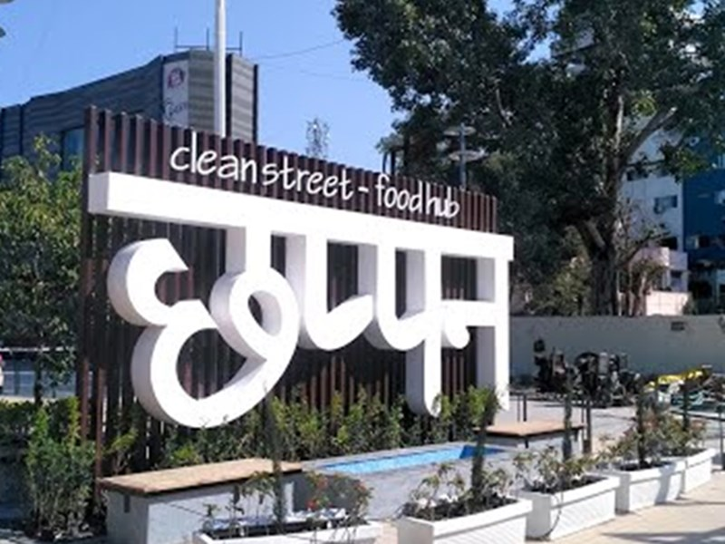

About Indore
Indore is situated on the Malwa plateau at an altitude of 553 m above sea level, on the banks of two small rivulets – the Saraswati and the Khan. They unite at the centre of the city where a small 18th century temple of Sangamnath or Indreshwar exists. The name Indore is due to this diety. It is the largest city in Madhya Pradesh state in central India . It is among the million+ population cities of India with a population of 32,76,697 (2011). It is the commercial capital of the state of Madhya Pradesh. Indore city presents a happy blend of historical past and promises of rapid future modernization.
Visit Indore
-
 Rajwada is a magnificent and historical palace that is located in the city of Indore
and was constructed by the Holkars more than 200 years ago.
Rajwada is a magnificent and historical palace that is located in the city of Indore
and was constructed by the Holkars more than 200 years ago.
- Sarafa is one of the market in India which remains as a jewellery marketplace at daytime and converts itself into a street food court at night.
Another Food Street
56 Dukan or Chappan Market is one of the most famous street food hubs of Indore. It is located in the New Palasia area of the city. It was awarded the 'Clean Street Food Hub' tag in 2021. The name of Chappan market comes from the 'Chappan bhog' that is traditionally prepared on the occasion of Janamashtami to celebrate the birth of Lord Krishna.